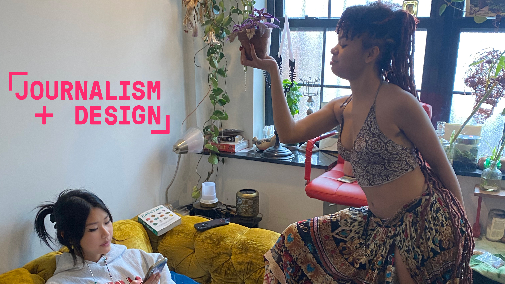
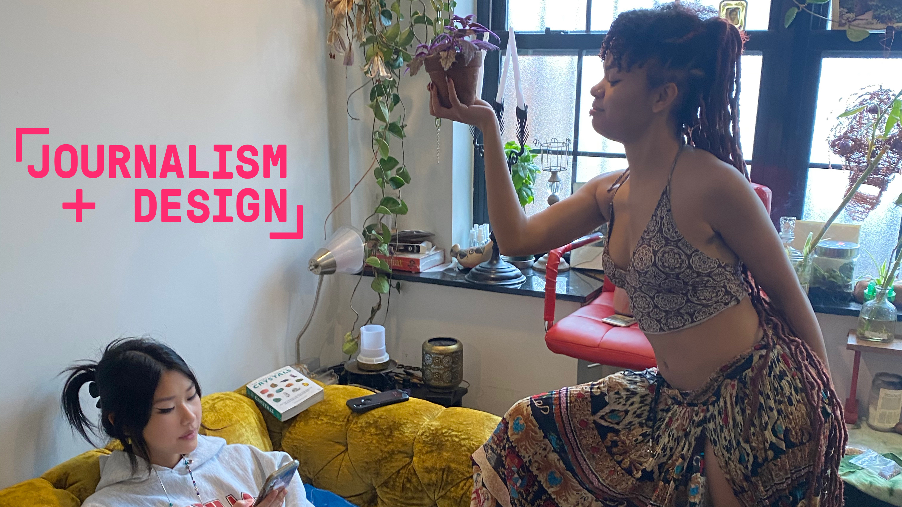

Return to homepage


 


For this assignment, i took a picture of stuffed animals/children, Mint, Cutiepie, Puff (the magic dragon), and baby. I then cropped, adjusted pixels/quality, and changed the kind of image files. Now there are 5 images from one source image.